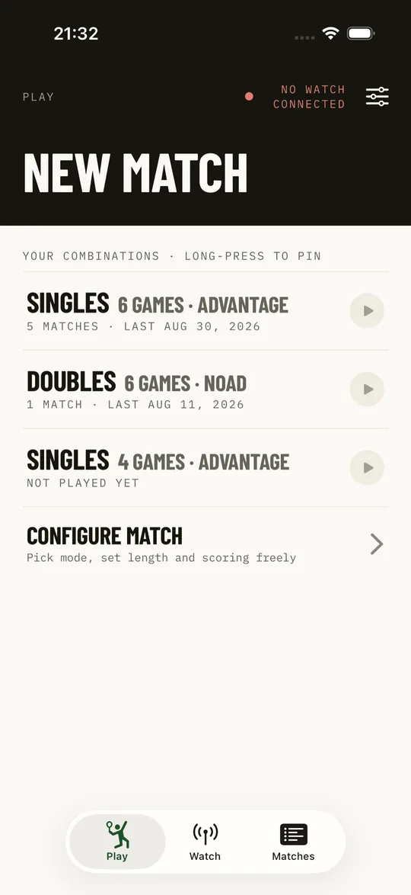
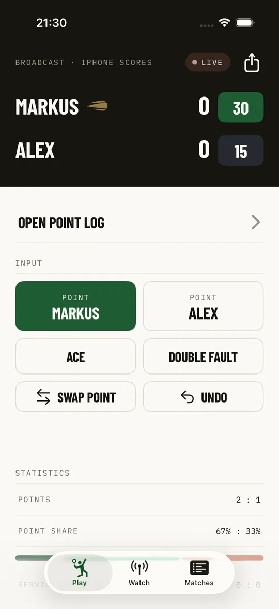
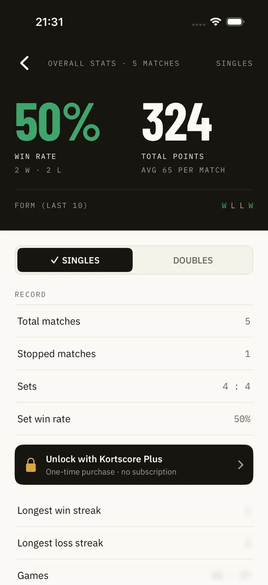
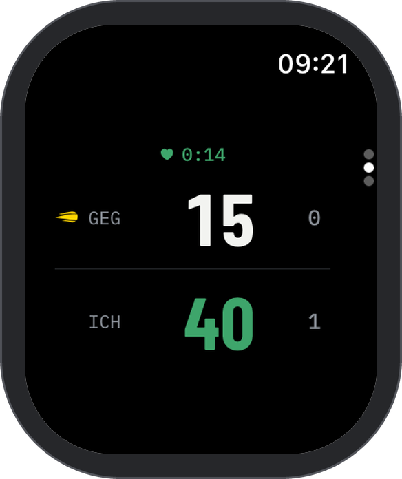

1×
The simplest controls
One tap on the watch and the point is counted. Twice for your opponent, four times to undo. No need to look at the display, no interrupted play.
Tennis & padel · iPhone, Android & watch
Kortscore counts your tennis or padel match on your wrist, point by point, without interrupting play. And whoever is not on court watches live.


1×
One tap on the watch and the point is counted. Twice for your opponent, four times to undo. No need to look at the display, no interrupted play.
67%
Win rate, set record, the point history of every match: your whole match history, evaluated automatically.
Live
Family, friends and club mates follow your match in real time on their phone, point by point, from anywhere.
0 €
Scoring, history and the live ticker cost nothing. Anyone who wants to dig deeper picks up Kortscore Plus.
01
Pick a format, or just tap the last combination. Singles, doubles, NoAd, best of 3, a single set: it all works.
02
The watch counts points, games and sets by real tennis and padel rules, tiebreak and champions tiebreak included.
03
The match lands in your history on the phone automatically, with the score in broadcast notation, duration and point history.
Also for padel
Padel scores like tennis: 15, 30, 40, game, set. So Kortscore needs no special treatment for it, the watch simply counts along. One tap per point, on court, without interrupting play.
For clubs & league play
On a league day several matches run at once, and nobody can be everywhere. With the live ticker the team, the captain and the fans follow every match in real time: from the next court, from the clubhouse or from home.
Put up our flyer at your club and your members get Kortscore Plus for less. How it works →
iPhone & Apple Watch
The same Kortscore, built for iPhone and Apple Watch: one tap on the wrist per point, the live ticker for everyone watching, and your whole match history on the phone. Matches you played on Android come along, the score works the same on either platform.




FAQ
Short answers to what people ask before their first match with Kortscore.
No. The watch keeps score entirely on its own, even without a connection. Only the live ticker needs the phone within Bluetooth range, because the phone is what sends the score online. Wi-Fi or LTE on the watch alone is not enough for that.
Any Apple Watch on watchOS 26 or newer, so Series 6, SE from the second generation, Ultra and later, paired with an iPhone. And any watch running Wear OS 3 or newer, so Samsung Galaxy Watch from the Watch 4 on, Google Pixel Watch and others, paired with an Android phone on Android 8 or newer. Four picks for the court are on the watches page, the full model list on the compatibility page.
Tap the watch once: point for you. Twice: point for your opponent. Four times: undo the last point. Games, sets and tiebreaks are worked out by the watch, you never need to look at the display. If you want to run through it once in peace: the app has a guide on both the phone and the watch where you can practise every tap.
Yes. Advantage or NoAd, sets to 6 or to 4, tiebreak and champions tiebreak, best of 3 or a single set. For padel, pick golden point as NoAd and the point at 40:40 decides the game. The rules in detail: tennis scoring, padel scoring.
You share a link, that is all. Whoever opens it sees the score, the set history and who is serving, live in the browser, point by point. Spectators need no app and no account, whether they are on the next court or at home. Your phone has to be within Bluetooth range of the watch for this.
Nothing. Scoring, match history and the live ticker are free, with no ads and no account, the same on iPhone and Android. Kortscore Plus is a one-time purchase and adds advanced statistics, automatic backups and the AI coach that analyses your matches.
Yes, with no detours. Padel is scored like tennis, and doubles is one of the formats right on the start screen. Singles, doubles, NoAd: pick once and the watch counts along.
Yes. The same Kortscore, built for iPhone and Apple Watch: one tap per point on the wrist, the live ticker, your match history on the phone. Free in the App Store, and Kortscore Plus is a one-time purchase there as well.
Yes. The Kortscore app from the App Store also runs on iPad with iPadOS 18 or newer and on Macs with Apple silicon and macOS 15 or newer, in a freely resizable window. Match history, statistics and the live ticker get a bigger screen there. Scoring on the wrist still goes through the iPhone, because Apple pairs the Apple Watch only with an iPhone.
Yes, scoring is identical on both: one tap per point, the same formats, the same live ticker. One difference: on the Apple Watch a match runs as a workout. That is what keeps the display on for the whole match.
Yes, through backup and restore in the app: create a backup on the old device, restore it on the new one, done. It works in both directions. There is currently no Kortscore account that syncs data through the cloud.